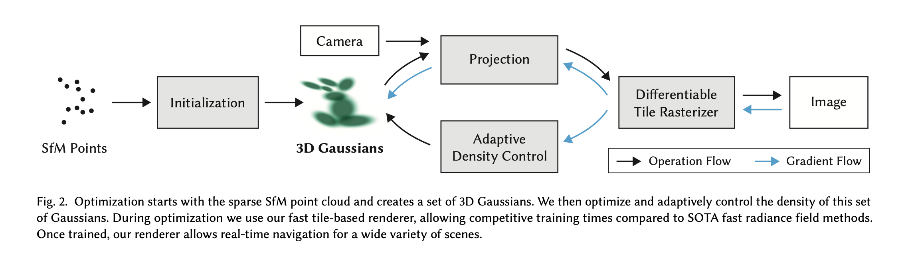
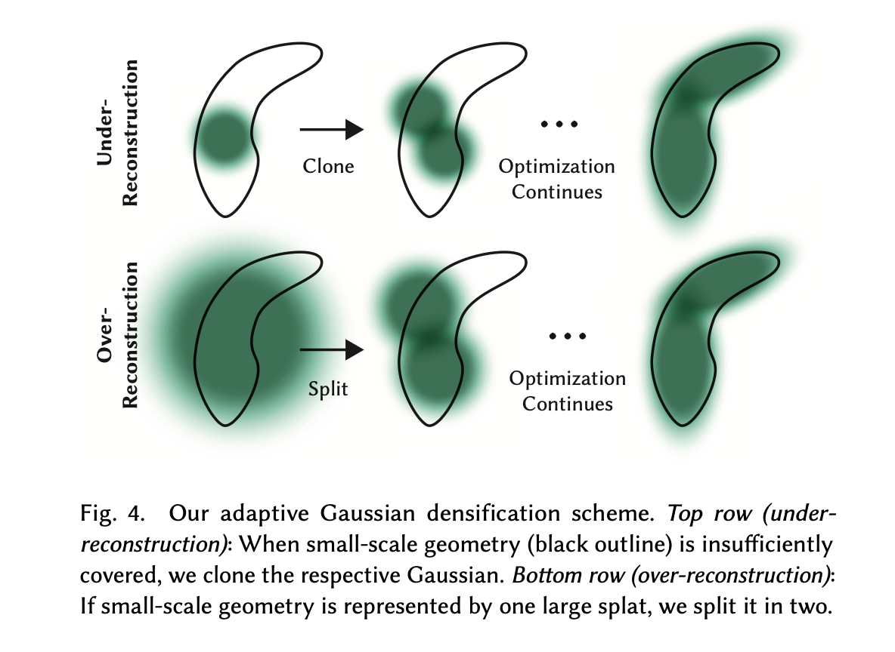

3D Gaussian Splatting for Real-Time Radiance Field Rendering
3D Gaussian Splatting (3DGS) aims to solve the problem of expensive neural network training and inference in NeRF, enabling real-time rendering.
It avoids the need for random sampling used in NeRF, significantly accelerating the rendering process.
Existing NeRF Acceleration Methods
- Using spatial structures to store neural features. This replaces the MLP in NeRF with voxel or point-based spatial models.
- Replacing positional encoding with hash tables.
- Using Spherical Harmonics (SH) to store directional color. This is simpler than using an MLP to represent view-dependent colors and can be stored directly in voxels or points.
- Shrinking or completely removing the MLP.
Point-based Methods and Radiance Fields
Point-based α-blending and NeRF-style volumetric rendering use similar rendering techniques. However, NeRF is continuous and requires random sampling.
- Some methods use neural networks to represent point attributes.
- Pulsar: Efficient Sphere-Based Neural Rendering uses sphere primitives to represent points. These spheres are isotropic (always circular). In contrast, 3D Gaussian Splatting (3DGS) uses anisotropic Gaussians, which can represent ellipsoids of any shape.
- Pulsar only backpropagates gradients for the top N splats, while 3DGS backpropagates through all splats.
- Pulsar ignores visibility order, whereas 3DGS performs alpha-blending based on visibility.
Method

The input consists of a set of images of a static scene, a point cloud produced by Structure-from-Motion (SfM), and the camera poses/intrinsics provided by SfM.
Each 3D Gaussian is defined by:
- Position (mean)
- Covariance matrix
- Opacity α
- View-dependent color parameters (Spherical Harmonics)
3D Gaussians act as primitives for differentiable volume rendering. They are unstructured and highly efficient for fast rendering.
Projecting the Covariance Matrix
To project the covariance matrix from world space to camera space:
- Σ′=JWΣWTJT
- W is the transformation matrix from world to camera coordinates.
- J is the Jacobian matrix for perspective projection. Perspective distortion occurs because we are projecting a region rather than a single point.
The covariance matrix must be positive semi-definite. To ensure this during gradient descent, it is decomposed into:
- Σ=RSSTRT
- This is analogous to describing an ellipsoid by its axis lengths (S) and its rotation (R).
To simplify backpropagation and improve numerical stability, gradients for all parameters are derived explicitly.
Optimization
- A sigmoid activation function maps opacity values to [0, 1].
- The initial covariance matrix is estimated as an isotropic Gaussian with axes equal to the mean distance to the three closest points.
- The loss function combines L1 loss and D-SSIM loss (which considers brightness, contrast, and pixel correlation).
Adaptive Control of Gaussians

The optimization process adds or deletes 3D Gaussians periodically:
- Under-reconstruction: Regions lacking enough Gaussians.
- Over-reconstruction: Regions where a single Gaussian covers too large an area.
- Both cases are identified by large view-space positional gradients.
Handling Under-reconstruction
- Duplicate the Gaussian in that region and move the new one in the direction of the positional gradient.
Handling Over-reconstruction
- These Gaussians have large variance. They are split into two smaller Gaussians. The variance is reduced by a factor of 1.6 (determined experimentally), and the new positions are sampled from the original Gaussian’s PDF.
Pruning
- Periodically reset all Gaussian opacities to a very low value. Optimization will naturally increase the opacity of important ones.
- Gaussians with very low opacity are deleted.
- Gaussians that occupy too much space in image space or world space are deleted.
Efficient Rendering
- Only Gaussian splats that intersect the view frustum (within a 99% Confidence Interval) are kept.
- Splats are sorted by depth in camera space once per image. Sorting per pixel is unnecessary because splats are small enough that their center point depth is a sufficient approximation.
Hardware Optimizations
- Images are divided into 16x16 tiles, each processed by a GPU thread block.
- Sorting keys use the tile ID in high bits and depth in low bits. This ensures splats covering the same tile are stored contiguously in memory.
- If a splat covers multiple tiles, it is instantiated multiple times.
- Each tile only needs a start and end pointer to its relevant splats for efficient rendering.
Training Details
- Training begins at 1/4 resolution for 250 iterations before gradually scaling up to full resolution.
- For SH coefficients, initial training only optimizes the zero-order component (view-independent color). This stabilizes training, as view-dependent data might be missing for certain points (e.g., in corners).
- Convergence usually takes 30k iterations (approx. 40 minutes).
- Model size is typically several hundred MBs.
Ablation Study
- Restricting backpropagation to only the first 10 points significantly degrades performance.
- Using random points instead of SfM initialization drops performance, especially in backgrounds or areas with few viewpoints.
- Failing to split large Gaussians (over-reconstruction) leads to a significant drop in PSNR.
- Handling under-reconstruction shows less dramatic impact but is still beneficial.
- Removing SH coefficients or using Isotropic Gaussians (diagonal covariance) slightly decreases performance.
Limitations
- Streak-like artifacts can appear in regions with few constraints.
- “Popping” artifacts may occur because the renderer clips Gaussian splats, creating hard thresholds.
- Visibility ordering is an approximation because Gaussians have spatial extent; this can lead to slight rendering inaccuracies, which might be solved by anti-aliasing.
reference
-
Deep blending for free-viewpoint image-based rendering.
-
Free view synthesis.
-
Soft 3D reconstruction for view synthesis.
-
Deepvoxels: Learning persistent 3d feature embeddings.
-
Instant Neural Graphics Primitives with a Multiresolution Hash Encoding.
-
Plenoxels: Radiance Fields without Neural Networks.
-
Neural Point-Based Graphics
-
Pulsar: Efficient Sphere-Based Neural Rendering.
-
Point-nerf: Point-based neural radiance fields
-
VoGE: A Differentiable Volume Renderer using Gaussian Ellipsoids for Analysis-by-Synthesis.
-
Mixture of volumetric primitives for efficient neural rendering.